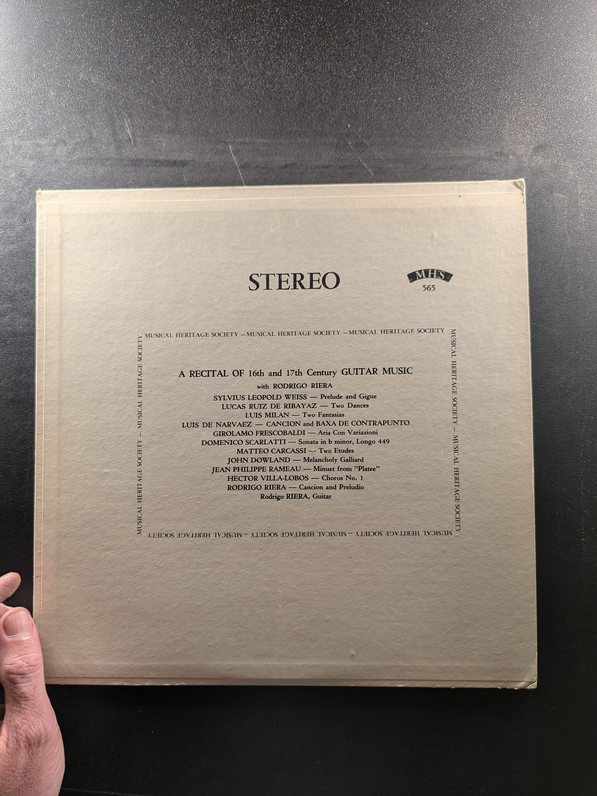

The Great Etudes for Guitar
Oscar Caceres
MHS 3599
Suite in G Major
Johann Sebastian Bach / Silvius Leopold Weiss
Musical Heritage Society MHS 890
Masters of the Lute and Guitar
Various Artists
Musical Heritage Society Inc. MHS 1055
The Best of Laurindo Almeida
Laurindo Almeida
Capitol Records DT-5023
Four Centuries of Italian Guitar Music
Ernesto Bitetti
The Musical Heritage Society Inc. MHS 1428
Music for flute, oboe & guitar
Trio Sonata
MMG 1138
Quartet in A for Guitar & Strings / Quartet in D 'The Lark', op. 64/5
Barcelona String Quartet, J. Toledano, Guitar
Baroque Records 2818
Spanish Music for the Classic Guitar
Rey de la Torre
Nonesuch H-71339
The Second Album
Trio Sonata
MMG MMG 1166
Spanish Baroque
Peter Kraus & Mark Bird
Golden Lin SGLP 7003
The Guitars of Sergio and Eduardo Abreu
Sergio and Eduardo Abreu
CBS S 72748
Suite in A Major / Suite in G Major
Ernesto Bitetti
The Musical Heritage Society Inc. OR 321
Oscar Ghiglia plays Scarlatti and other Baroque masters
Oscar Ghiglia
Angel S-37036
Sonata a Cinque in D Major, Gg. 1 / Violin Concerto in D Minor, Op. 8, No. 7 / Sonata a Cinque in D Major, Gg. 7 / Violin Concerto in A Major, Op. 8, No. 10 / Sonata in G Major, Gg. 62
Giuseppe Torelli
The Musical Heritage Society, Inc. MHS 1053
A Recital of 16th and 17th Century Guitar Music
Rodrigo Riera
Musical Heritage Society MHS 565
Music for Guitar & Piano
Leo Witoszynskyj, Rosario Marciano
Turnabout TV 34728
20th Century Guitar Music
Jose Luis Gonzalez
Odyssey 32 16 0220
Classic Guitarist
Rey De La Torre
Remington R-199-151
Music for the Classic Guitar
Ida Presti & Alexandre Lagoya
Nonesuch H-71118
Music for Guitar from the Spanish Renaissance and Rococo
Brigitte Zaczek
The Musical Heritage Society Inc. MHS 991
Elizabethan Guitar Music
Betto Davezac
Musical Heritage Society 1950
Englische Gitarrenmusik
Siegfried Behrend
Deutsche Grammophon 2530 079
Guitar Concerto / Chaconne (For Guitar) / Concierto Levantino for Guitar & Orchestra
Narciso Yepes
London CS 6601
The Latin American Guitar
Eliot Fisk
Musical Heritage Society MHS 4826Q
Vivaldi Guitar Concertos
The Romeros
Mercury SR 90460
{kind=link}
{kind=link}
{kind=link}
{kind=link}
{kind=link}
{kind=link}
{kind=link}
{kind=link}
{kind=link}
{kind=link}
{kind=link}
{kind=link}
{kind=link}
{kind=link}
{kind=link}
{kind=link}
{kind=link}
{kind=link}
{kind=link}
{kind=link}
{kind=link}
{kind=link}
{kind=link}
{kind=link}
{kind=link}